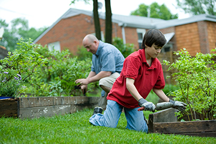
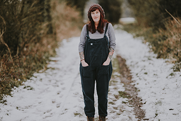
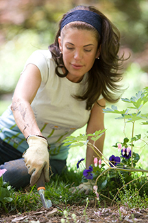

TARGET AUDIENCE
This site will appeal to users in the demographic of 25 to 50, both male and female, and is particularly geared towards people with children who are elementary students. Our target demographic will be comfortable with technology, and may include people who are involved in sports, gardening, and other outdoor persuits.
Scenarios
Name: Mary DeLeon
Age: Thirties
Occupation: Stay At Home Parent
Purpose of Visit: Mary wants to check the weather and know what kind of clothing her two elementary-aged children should wear for the day. She also likes to see community announcements.

Name: David Winston
Age: Fifites
Occupation: Plumber
Purpose of Visit: David is an avid gardner who watches the weather closely to time when he should start his indoor seedlings for his spring garden. He also uses the site to plan when to plant his vegetables and when to cover his plants with frost blankets to protect them from a potential early freeze.

Name: Annie Spratt
Age: Forties
Occupation: Mail Carrier
Purpose of Visit: Annie takes a daily walk, rain or shine. She has a large collection of walking shoes, show boots, and galoshes to make sure her feet stay dry. She checks the website daily before her walk to see what the weather is and if it will rain before she returns home.
Name: Sam Fallon
Age: Twenties
Occupation: Lawyer
purpose of Visit: Sam likes to take the train to the city for work, but when there is heavy snow, the journey often takes longer than normal and Sam needs to catch an earlier train to be on time for his job. He checks the website every evening to plan what train he needs to catch.

Name: Sonja Peters
Age: Thirties
Occupation: Artist
Purpose of Visit: Sonja grows beautiful flowers in her garden. She checks the forecast every day to see if it's going to rain or if she needs to water her plants by hand.